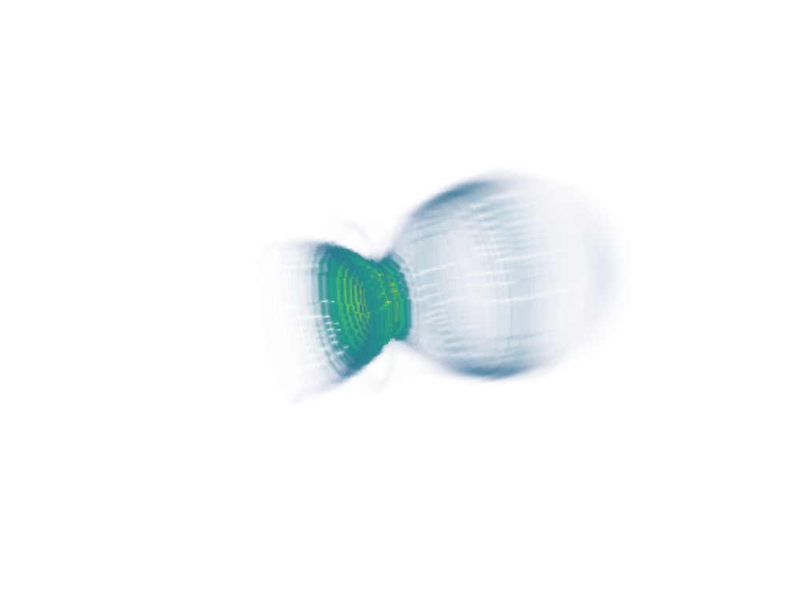

3D visualization using PyVista¶
The python package PyVista can be used to easily produce a 3D visualization of output data. Install PyVista and openPMD-viewer:
pip install pyvista
pip install openpmd-viewer
For a simple static visualization, you can use the following code as an example:
from openpmd_viewer import OpenPMDTimeSeries
import pyvista
# Open the simulation outputs using openPMD viewer
ts = OpenPMDTimeSeries('./sim_outputs/diags/hdf5')
# Create the PyVista plotter
plotter = pyvista.Plotter()
plotter.set_background("white")
# Retrieve the rho field from the simulation
# The theta=None argument constructs a 3D cartesian grid from the cylindrical data
rho, meta = ts.get_field("rho", iteration=ts.iterations[-1], theta=None)
# Create the grid on which PyVista can deposit the data
grid = pyvista.UniformGrid()
grid.dimensions = rho.shape
grid.origin = [meta.xmin * 1e6, meta.ymin * 1e6, meta.zmin * 1e6]
grid.spacing = [meta.dx * 1e6, meta.dy * 1e6, meta.dz * 1e6]
grid.point_arrays['values'] = -rho.flatten(order='F')
# Add the grid to the plotter
# Use a cutoff for rho via the clim argument since otherwise it shows only a small density spike
plotter.add_volume(grid, clim=(0, 4e6), opacity='sigmoid',
cmap='viridis', mapper='gpu', show_scalar_bar=False)
# A good starting camera position - the three values are the camera position,
# the camera focus, and the up vector of the viewport
plotter.camera_position = [(-74, 32, 51), (0, 0, 88), (0, 1, 0)]
plotter.show()
3D visualization of the simple LWFA example:
